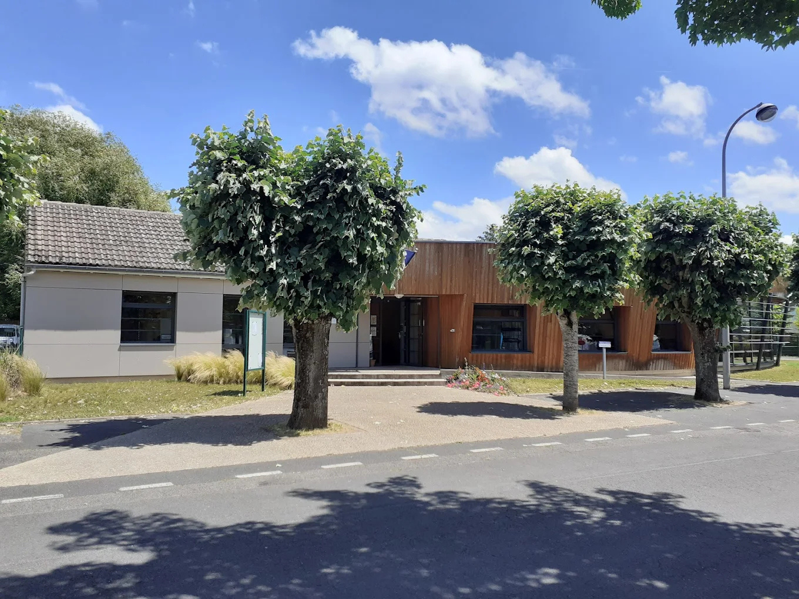

Bienvenue dans votre Guide des Familles
"Chères familles, nous savons combien il est parfois difficile de concilier vie personnelle, professionnelle et sociale. C'est pourquoi la Communauté de communes Berry Loire Puisaye souhaite être à vos côtés, à chaque étape de la vie."

Chères familles,
Nous savons combien il est parfois difficile de concilier vie personnelle, professionnelle et sociale. C'est pourquoi la Communauté de communes Berry Loire Puisaye souhaite être à vos côtés, à chaque étape de la vie.
Grâce à nos services et à nos partenariats, nous travaillons chaque jour pour vous accompagner : accueil de la petite enfance, accompagnement des jeunes, accès à l'information et aux droits.
Notre volonté est simple : que chaque habitant puisse trouver écoute, soutien et solutions adaptées.
Vous trouverez dans ce guide toutes les informations pratiques dont vous pouvez avoir besoin, ainsi que l'ensemble des ressources disponibles sur notre territoire pour favoriser l'épanouissement des plus jeunes et de leurs parents.
Parce que la richesse de notre territoire, ce sont avant tout ses habitants, nous continuerons à agir pour une Communauté de Communes plus solidaire, attentive et humaine.
Bonne lecture
M. GITTON Vincent
Président de la Communauté de Communes Berry Loire Puisaye
Mme BERTRAND Isabelle
Vice-présidente en charge des affaires sociales
Un guide collaboratif
Le Guide des Familles est né du constat d'un manque de connaissance des habitants concernant les services, dispositifs et ressources présents sur le territoire.
Conçu de manière collaborative avec les structures locales, la Caisse d'Allocations Familiales du Loiret (CAF), la Mutualité Sociale Agricole Beauce-Cœur de Loire (MSA), les élus et les familles elles-mêmes, il se veut être un outil indispensable recensant l'ensemble des informations utiles à la vie familiale, au sens large.
On y retrouve des repères clairs et pratiques autour :
- des mairies et les services publics,
- de la petite enfance, l'enfance et la jeunesse,
- de l'accès aux droits et à la parentalité,
- des loisirs et de la culture.
Ce guide a pour ambition de faciliter le quotidien des familles, de renforcer le lien avec les acteurs locaux et de valoriser toutes les ressources disponibles sur notre territoire.

Accédez directement à une rubrique
🏛️ Interlocuteurs clés
Mairies, CC, CAF, MSA - tous vos contacts locaux
👶 Arrivée d'un enfant
Démarches, maternité, PMI, sages-femmes
🌱 Petite enfance (0-5 ans)
Multi-accueil, assistantes maternelles, RPE
📚 Enfance (3-11 ans)
Écoles, accueils de loisirs, périscolaire
🎯 Jeunesse (11-25 ans)
Collèges, structures jeunesse, mission locale
👪 Parentalité
Accompagnement, ateliers, soutien à la famille
🎨 Loisirs & Culture
Bibliothèques, sport, musée numérique
🤝 Vivre ensemble
Associations, initiatives citoyennes, numérique
⚖️ Accès aux droits
France Services, ADS, CIDFF, handicap